StudyPipe themes
Phone previews (360×740) of the same lesson in each theme. Pick one per topic; design new ones with the theme-designer skill.
Editorial Ink default
editorial-inkDark ink studio hub with glowing accents; warm textbook-paper lessons. Magazine-like and premium.
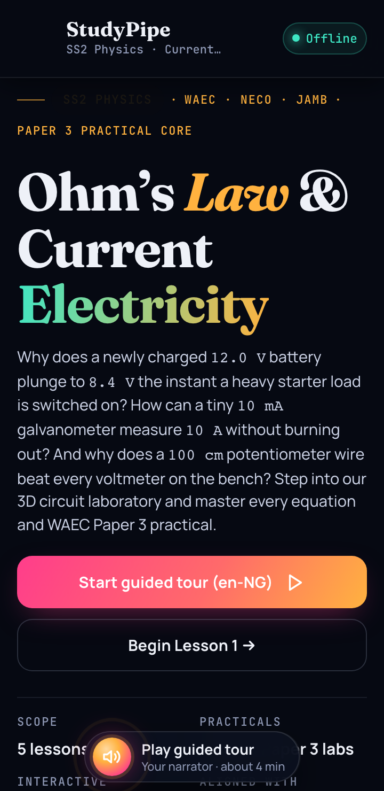
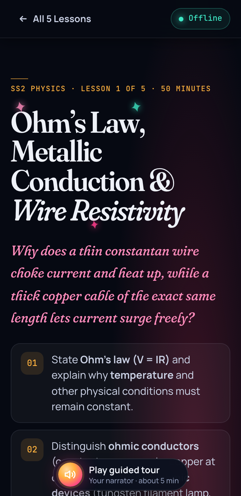
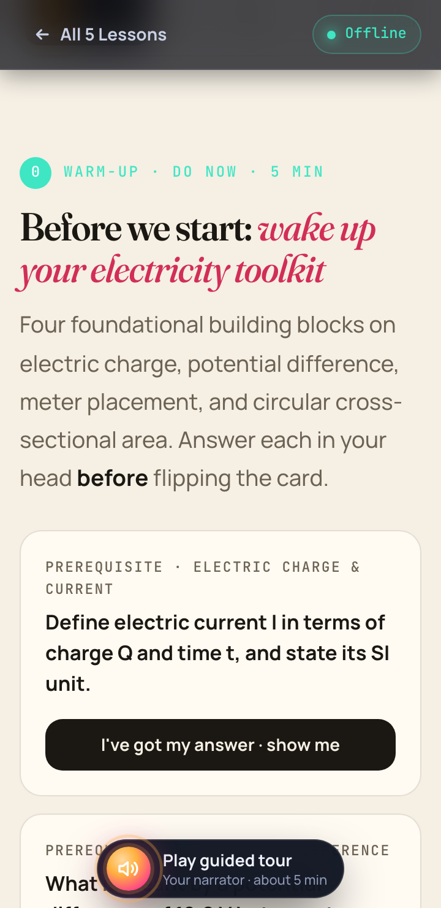
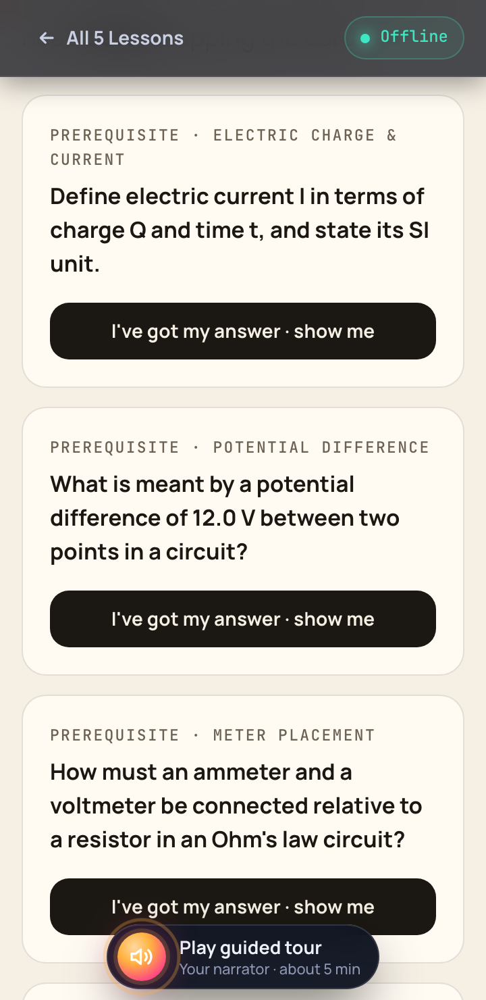
Use it: node scripts/apply-theme.mjs topics/<slug> editorial-ink
Exam Hall
exam-classicSober navy and clean white paper with a red-pen accent. Bookish serif headings and a hyperlegible body face. Built for focused SS3 / WAEC revision.
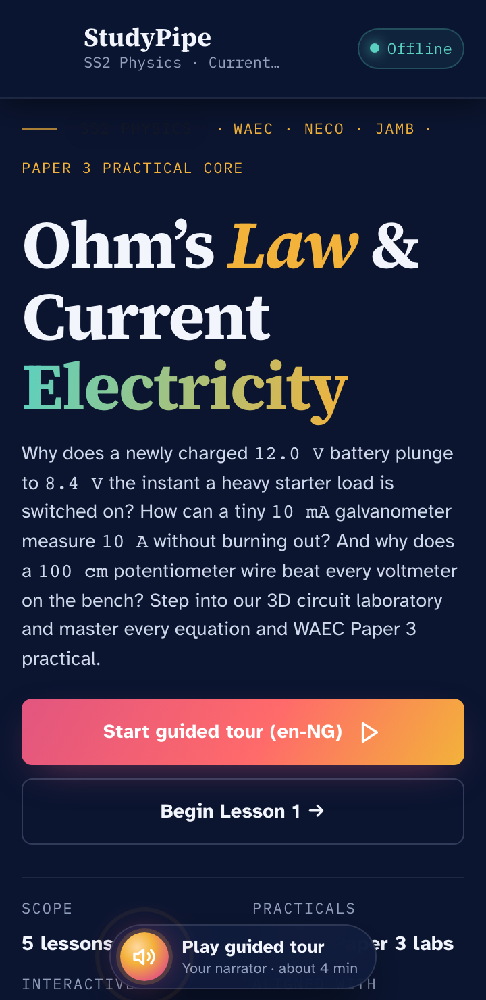
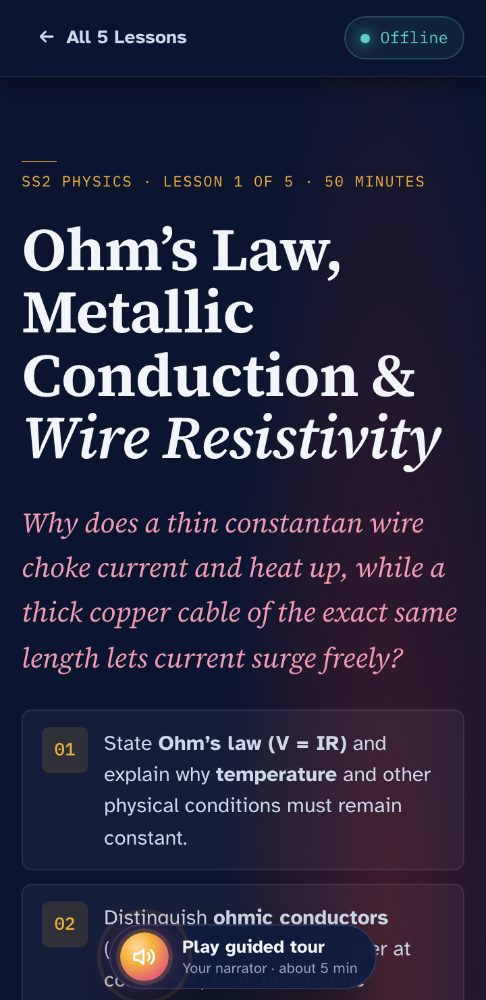
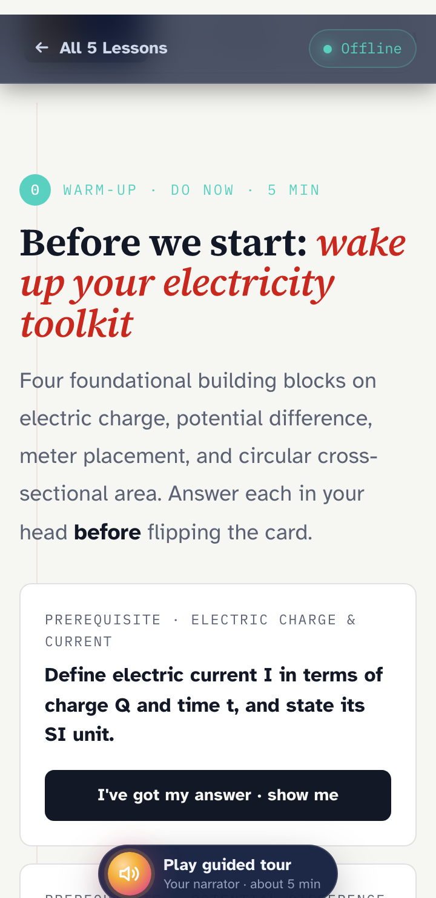
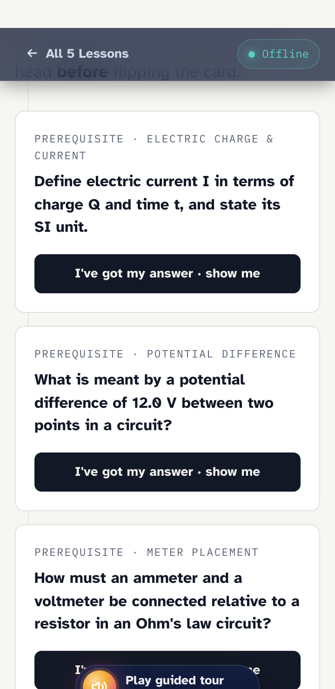
Use it: node scripts/apply-theme.mjs topics/<slug> exam-classic
Green Lab
green-labDeep Nigerian-green lab console, electric lime highlights and a cool mint-white paper. Techy grotesk headings. Energetic and modern, a natural fit for physics and chemistry.
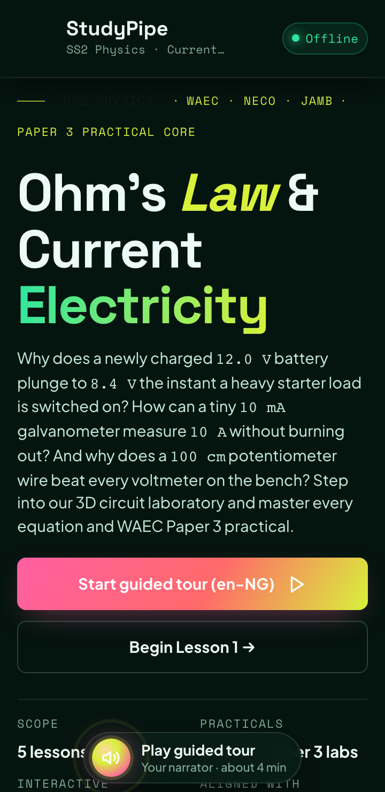
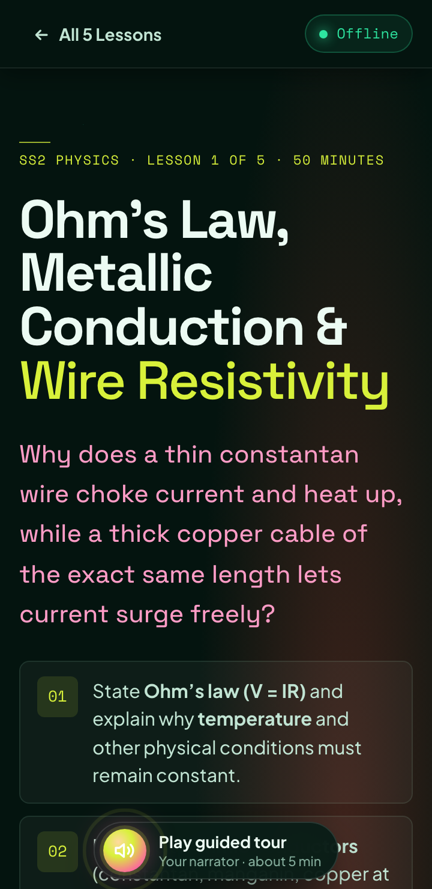
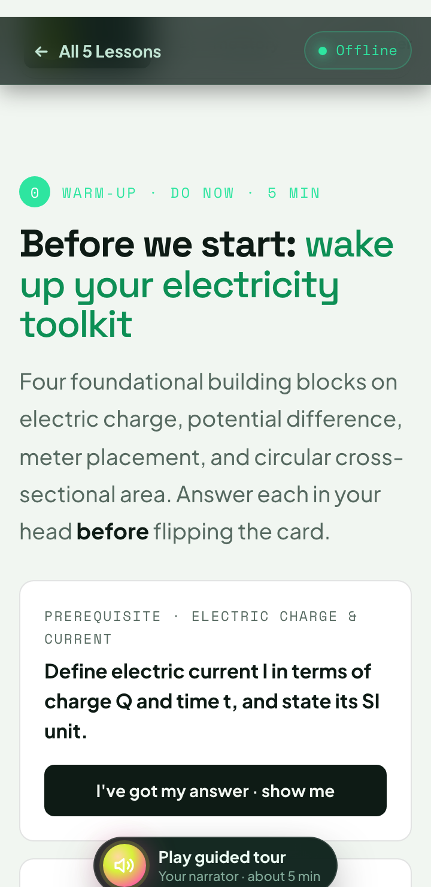
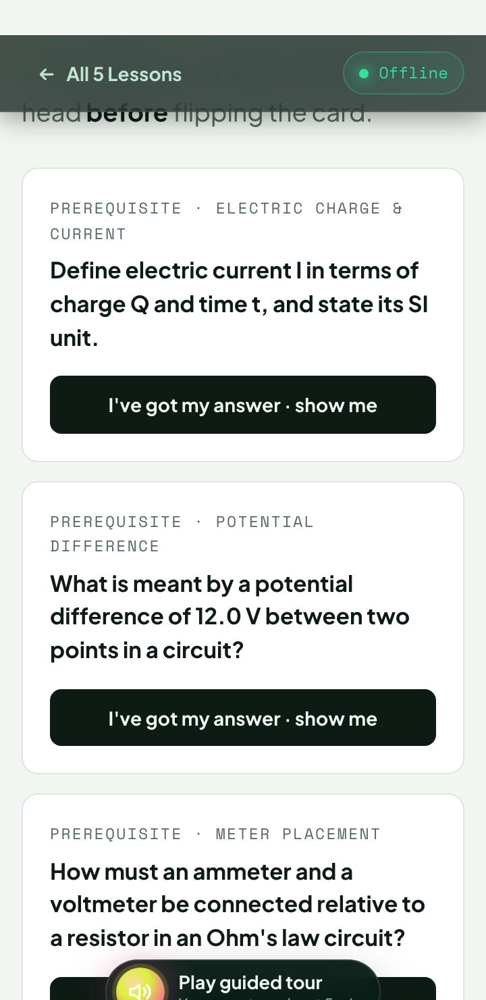
Use it: node scripts/apply-theme.mjs topics/<slug> green-lab
Junior Play
junior-playFriendly indigo night sky with sunny-cream pages, chunky rounded headings, big soft corners and bright candy accents. Made for JSS learners.
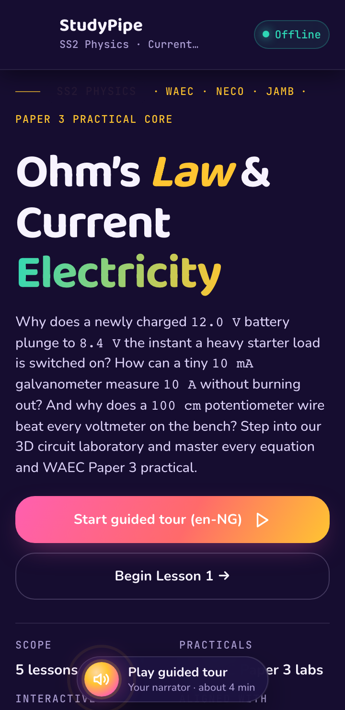
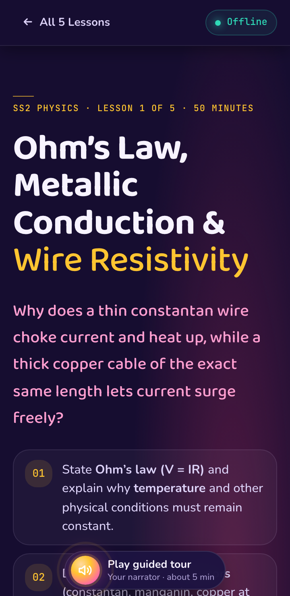
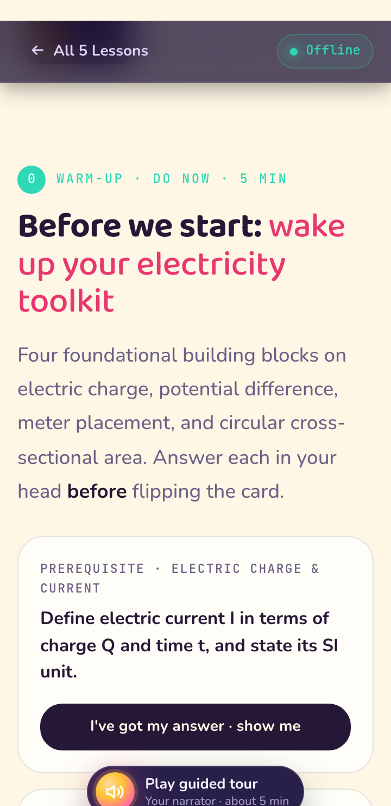
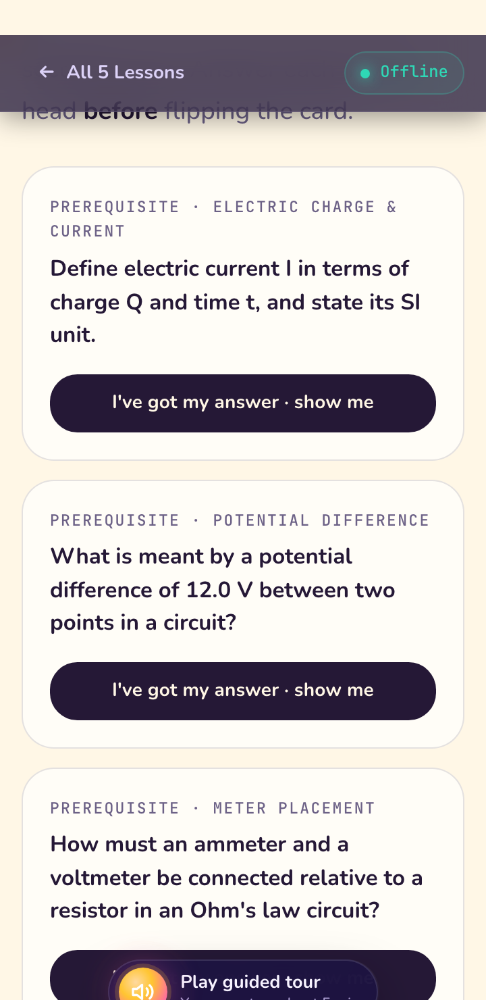
Use it: node scripts/apply-theme.mjs topics/<slug> junior-play